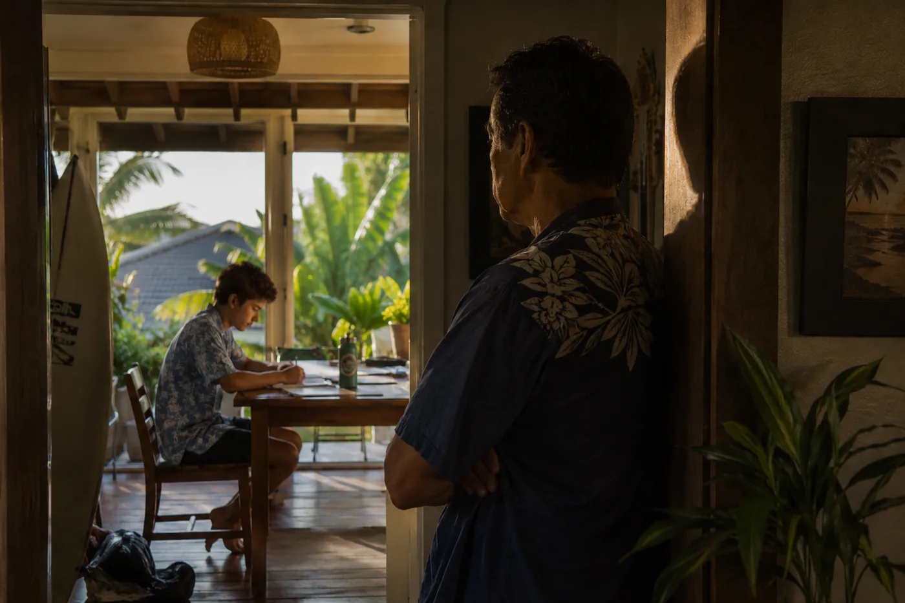
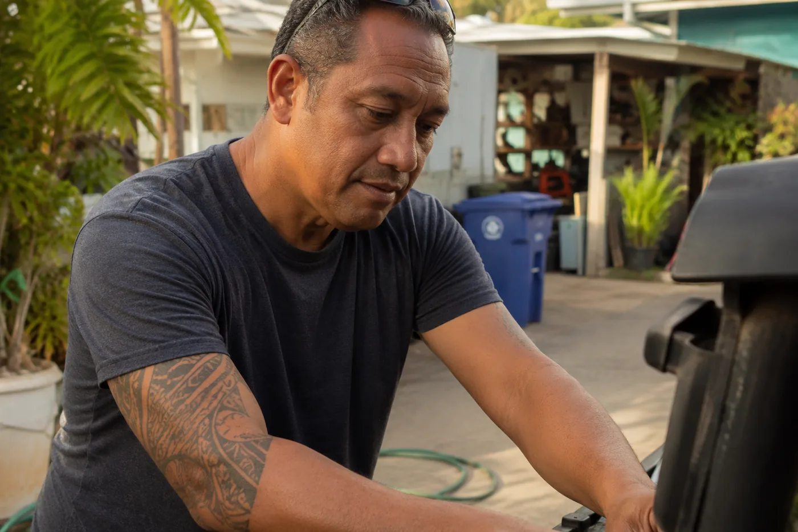
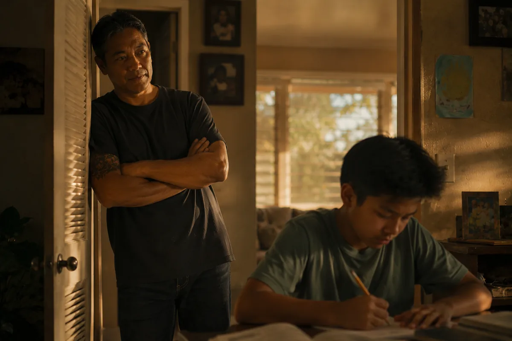
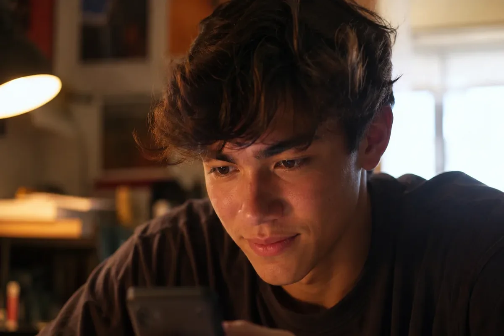
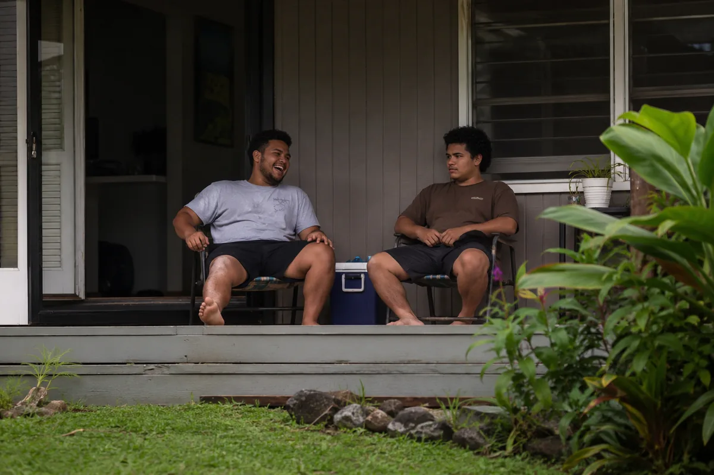
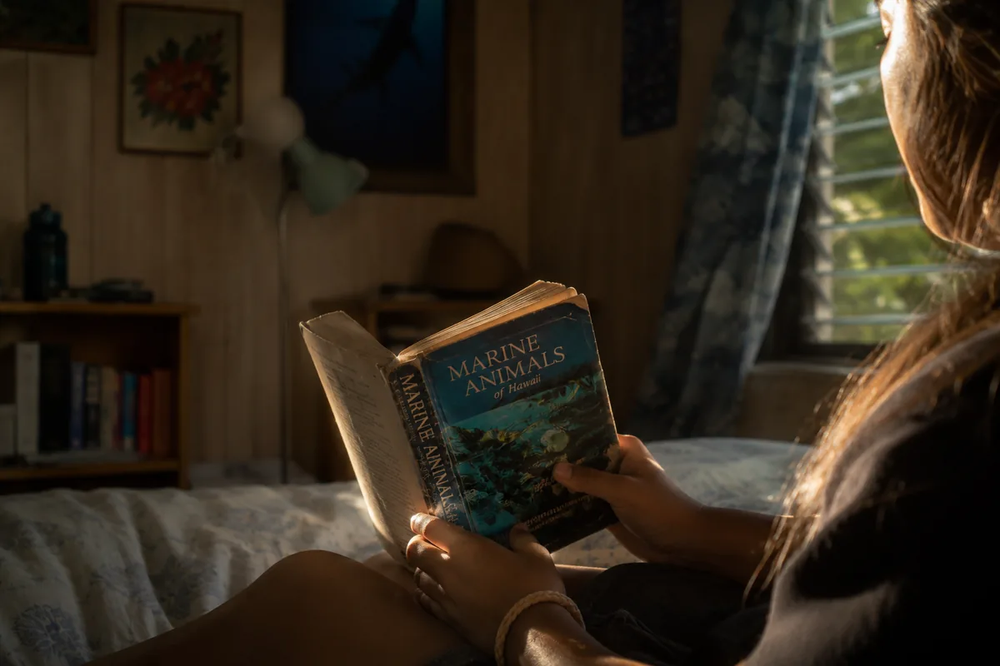
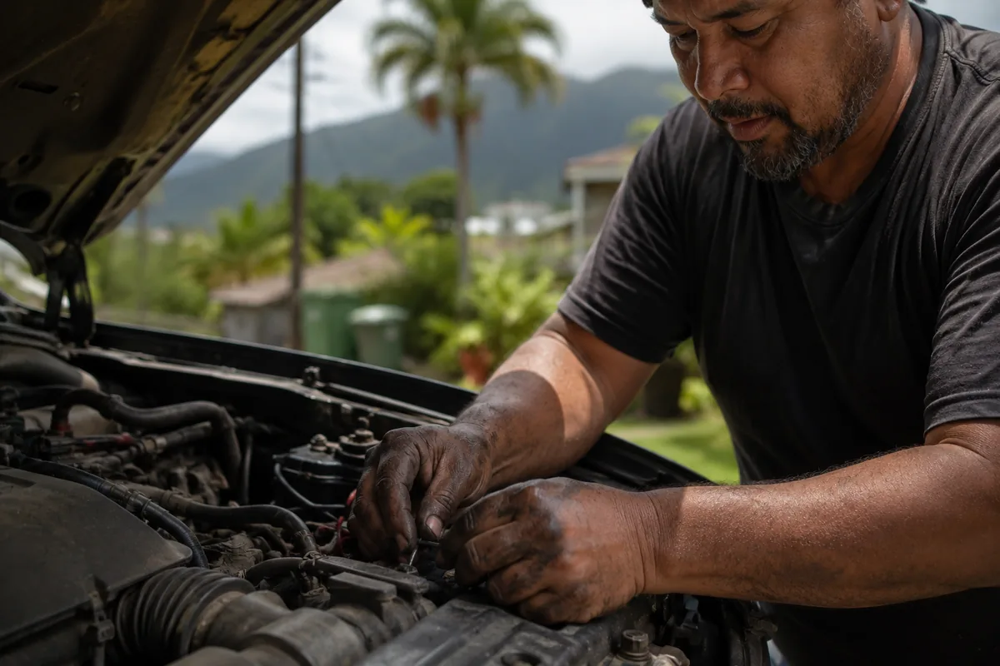

A father in Kaneohe. The question nobody put in front of him. What that cost, measured in one son.
A 17-year-old in Kaneohe used a platform and saw, for the first time, what his life could look like. His father, standing in the same house, never got that question. This film lives in what opened between them.
David Kahananui put his son in a charter school. That is an act of intention.
What did you want to be? Nobody asked David that. Not at school, not at home, not at any point in the years between being a kid with a head full of something and being a man with a mortgage and a son he drove to a charter school he researched himself. The question was available. It just never arrived. This film goes to find out what it would have found if it had.

David watching Archer. Before any question. This is where the film starts.
We shoot in May. The trade winds are steady, the light is warm without the bleaching harshness of summer, and the North Shore is flat and glassy. Kailua Beach in early morning is one of the most beautiful places on earth and it is ten minutes from Kaneohe. That beauty is not a backdrop. It is an argument. A place that looks like this, and a man in it who was never asked what he wanted. The camera holds both things in the same frame and lets the audience decide what to do with them.
Kindred brought us to Archer. The film stays with David. That distinction matters. The platform appears once, briefly, because the point is not what the tool can do now. It is what never arrived for him then. Any festival submission carries this disclosure in full.

David Kahananui
The filmLate 40s — Kaneohe, O'ahu — Works construction project management at MCBH — Coaches youth flag football on Saturdays
He gets up before his son. He has done this for seventeen years. He researched the Hawaiian Academy of Arts and Science, drove to the information night, filled out the application, and followed up twice. He is the kind of father who shows up. What he has never done is apply that same attention to his own life, not because he forgot to, but because providing was the thing, and providing is not compatible with questions about yourself. He probably wanted to be a marine biologist. Or a pilot. Or something else entirely. The film does not know yet. That is the question. What his face does in the seconds before he answers it is what everything else is built toward.
Archer
17 — Hawaiian Academy of Arts & Science, 2023 Graduate — Now studying environmental science at UH Manoa — The door, not the room
He said the platform made careers feel real. He could see the actual shape of a life, not a job title. That moment of recognition is in this film for forty seconds. The camera is on his face, not the screen. What we're after is not the discovery. It's what that discovery costs the man who drove him to school every morning for twelve years. Archer is how we get to David. His certainty about his own future makes his father's silence about his own past into something the audience can feel without being told to.
Others the camera finds
A treatment that scripts what it hasn't filmed yet is a treatment pretending. These are the moments we will wait for. Some will arrive. Some won't. The film is built from what actually happens.
01
David watching Archer
Before any question. The film's real opening.David watching his son do something ordinary. We want David's face in that moment, unguarded, with nothing required of him. It is the face of a man who has poured everything into this kid's future and has not once turned that same attention on his own past. We film it before any formal session.
02
The three seconds before David answers
The film's centre of gravityOn a day when he has stopped expecting anything formal, when the camera has become furniture, we ask it. What we want is the three seconds before he answers. Not the answer. What his face does when the question lands in a place it has never been before. That moment cannot be scheduled. It can only be earned through time spent in the room.
03
Ray's joke and what David does after it
The brothersRay makes the joke. David laughs. Then Ray says the real thing, quieter. We are watching David's face when Ray says the real thing. These two men have a fifty-year history of not quite having this conversation. We are going to be present when they get closer to it than usual, and we are going to hold the shot when they do.
04
Linda after the laugh ends
The question nobody thought to ask her eitherShe laughs first, hard, and we stay in it. What comes after the laugh is not planned and cannot be predicted. The transition from the laugh to whatever is underneath it is the scene. We will not cut before it arrives.
That is the structure, not a flaw in it. The film ends without telling the audience whether anything changed. They decide what they watched.
I
THE HANDS
Opening — 4 minutesDavid's hands on a truck hood in his driveway. We stay with them. Then four other adults in four conversations, cut together: Tony in his kitchen, Ms. Akana in the parking lot, Ray on his porch, Linda at her desk at Windward CC. The same question to each of them, off camera. What they wanted. Most go quiet before they answer. The specific quality of each quiet is different. No title card until this sequence is done.
II
THE SON
7 minutesWe meet Archer properly. The platform appears once: his face, not the screen, forty seconds. We find Keona and her library book. We spend time with Ms. Akana on her last appointment of the day and count every minute of it. David moves through this section at a distance. He is present but not yet centred. The film is building toward him and the audience knows it.
III
THE QUESTION
7 minutesDavid's interview. The question arrives. We hold his face. Whatever happens in that room is the film's centre of gravity. We cut to Tony in his kitchen in Pearl City, the same question on a different day, a different man, a different version of the same silence. They have never met. They are holding the same thing. The edit does not explain the connection. It trusts the audience to feel it.
IV
THE CONTINUING
4 minutesDavid gets up the next morning. He drives somewhere. The film does not tell us where.
The sound recordist is hired before the DP. This is not a metaphor for priorities. It is a practical instruction.
David's house
A ceiling fan. A refrigerator. Tyres on wet asphalt outside. No music during his interview. The silence should cost something, and it only costs something if the room around it is real.
The school at 6:50am
HVAC. A door at the end of a hallway. The building before it fills. Record this before any student arrives. Know what the school sounds like empty so the edit can use what it sounds like full.
Kailua at dawn
The film opens in sound before it opens in image. Kailua Bay at 5:30am in May, the water flat and the light not yet decided. No title. No music. Just the specific sound of the place where this family has always lived.
These are not shots. They are the moments we will wait for. The edit is built from what actually happens, not from this list.
01 — David's hands
The film's first image. Grease in the lines of his knuckles. We stay until the hands feel like a person with a whole life behind them.

02 — David watching Archer
Before any interview. We stay on his face until the camera becomes furniture.
03 — Kailua at 5:30am
The film opens in sound here before the first image arrives. The audience arrives in this place before it meets anyone.
04 — The three seconds
David's face before the answer. Stay on it longer than feels comfortable. That's the shot.

05 — Archer before he clicks
The platform is in this film once. This is it. His face in the moment a life becomes imaginable.
06 — Ms. Akana at 4:15
The parking lot after the last appointment. What a person looks like when nobody needs anything from them anymore that day.

07 — Ray's joke
Ray makes it, David laughs, then Ray says the real thing. We are on David's face when the real thing lands.

08 — Keona's book
She found it at 9. Paid the overdue fine. The worn spine is still on her shelf.

09 — The hands again
The same shot as the first frame. The film ends here. The audience carries out whatever they understood.
The relationship comes before the camera. The first week with David has no formal agenda and no filming. We are learning what he is like when nothing is required of him. We are looking for the specific physical thing he does when the day is over. We are listening to how he talks about his son. By the time the camera arrives he has stopped performing for it. That is the practical schedule, not a philosophy.
We tell him one question is coming, at some point, and we say nothing more. On a day he has stopped expecting it, we ask. His face in the seconds before he answers is what the whole film is building toward. We cannot plan that moment. We can only earn the right to be present for it.
Director / Producer
Essah. Vision, access, interview methodology, final cut. Present every day of proximity time. The relationship with David is the film's foundation and it belongs to the director, not a fixer or a local producer.
Director of Photography
Observational documentary background. Comfortable in available light with no instinct to correct it. Scouts Kailua Beach, the school, and David's house in the week before principal photography. The May morning light window on the windward side is 6:00 to 7:30am. Misses it once and it does not come back.
Sound Recordist
First practical hire after the director. Records David's house, the school, and Kailua at dawn before any shooting begins. The acoustic character of each location is a pre-production decision.
Editor
In the room before the shoot ends. Someone who holds a shot past where most editors move. Reference: Garrett Bradley's Time. The phone call scene runs two minutes. Every second is earned. That is the patience this film requires.
Consulting Producer
Education documentary background. Consent framework for filming minors. Existing relationships with the short documentary festival circuit. This role is about ethics as much as logistics.
Pre-production
March 2 – April 11, 2027Legal and consent framework. First conversations with David and family, no camera. School access negotiated. Location scouting for light at actual shoot times.
Principal photography — O'ahu
May 4 – May 22, 2027Three weeks. David, Linda, Ray, Archer, Ms. Akana, Keona, Tony. Dawn shoots at Kailua in the first week to lock the opening images before anything else.
Edit — rough cut
June 1 – July 4, 2027Assembly by June 15. Rough cut by July 4. Editor and director in the same room for this entire period.
First cut to David
July 11, 2027David watches a cut before picture lock. His response, whatever it is, informs the final edit. This is not courtesy. It is part of the film's ethical commitment to its subject.
Picture lock, sound, grade
August 3 – September 5, 2027Sound mix prioritises location audio over score. Grade preserves the natural colour contrast between Kailua light and interior spaces. No flattening.
Delivery
September 12, 2027Kindred screening version and festival submission version prepared simultaneously. The same cut. Different packaging.
22 minutes fits the short documentary program at Tribeca, Hot Docs, and Full Frame. It plays in a school gymnasium. It embeds on a website. It does not outstay its welcome at a donor dinner.
David Kahananui got up before his son every morning for seventeen years.